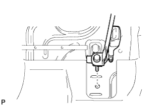
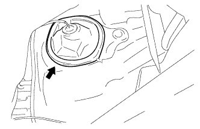
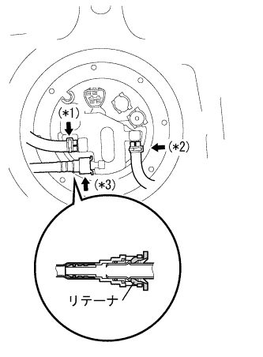
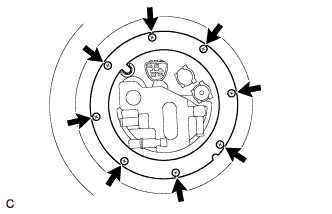

Fuel Suction Tube Assembly (with Pump & Gauge) (2AZ-FE) Removal |
| 1. Remove Rear Seat Headrest Assembly (RH Seat Position) |
| 2. Remove Rear Seat Headrest Assembly Center (RH Seat Position) |
| 3. Remove Rear Seat Cushion Hinge Cover NO.1 (RH Seat Position) |
 |
Disengage the 4 claws and remove the rear seat cushion hinge cover NO.1.
| 4. Remove Rear Seat Cushion Hinge Cover NO.2 (RH Seat Position) |
 |
Disengage the 4 claws and remove the rear seat cushion hinge cover NO.2.
| 5. Remove Rear Seat Assembly RH (Seat Position RH Side) |
 |
Remove the 2 front side bolts of the rear seat assembly RH.
 |
Fold the rear seat assembly RH forward.
Remove the 2 rear side bolts and remove the rear seat assembly RH.
| 6. Disconnect Rear Seat Outer Belt Assembly Center (Seat Position RH Side) |
 |
Remove the bolt and disconnect the rear seat outer belt assembly center together with the rear seat inner belt assembly.
 |
Remove the washer and rear seat outer belt assembly center from the rear seat inner belt assembly.
| 7. Remove Rear Seat Headrest Assembly (LH Seat Position) |
| 8. Remove Rear Seat Cushion Hinge Cover NO.1 (LH Seat Position) |
 |
Disengage the 4 claws and remove the rear seat cushion hinge cover NO.1.
| 9. Remove Rear Seat Cushion Hinge Cover NO.2 (LH Seat Position) |
 |
Disengage the 4 claws and remove the rear seat cushion hinge cover NO.2.
| 10. Remove Rear Seat Assembly LH (Seat Position LH Side) |
 |
Remove the 2 front side bolts.
 |
Fold the rear seat assembly LH forward.
Remove the 2 rear side bolts and remove the rear seat assembly LH.
| 11. Remove Rear Door Scuff Plate RH |
 |
Disengage the 8 claws and remove the rear door scuff plate RH.
| 12. Remove Rear Door Scuff Plate LH |
| 13. Remove Rear Floor Service Hole Cover |
 |
Remove the rear floor service hole cover.
| 14. Fuel Spill Prevention Procedure |
 |
Disconnect the fuel pump assembly connector.
Start the engine
Start the engine.
After the engine stops on its own, turn the ignition OFF.
Crank the engine again and check that it does not start.
Remove the fuel tank cap and release the pressure in the fuel tank.
| 15. Disconnect Battery Negative Terminal |
| 16. Disconnect Fuel Tank Main Tube |
 |
Spread the tip of the tube joint clip and pull it out in the direction of the arrow.
Pull out the main tube to disconnect it.
| 17. Disconnect Charcoal Canister Outlet Hose NO.1 |
 |
Disconnect the charcoal canister outlet hose No.1 from the fuel suction tube assembly. (*1)
| 18. Disconnect Fuel Hose |
Disconnect the fuel hose from the fuel suction tube assembly. (*2)
| 19. Remove Fuel Emission Tube NO.1 |
Pinch the retainer by hand as shown in the illustration, and disconnect the fuel emission tube No.1. (*3)
| 20. Remove Fuel Tank Vent Tube Set Plate |
 |
Remove the 8 screws and fuel tank vent tube set plate.
| 21. Remove Fuel Suction Tube Assembly (with Pump & Gauge) |
 |
Pull the fuel suction tube assembly out of the fuel tank and disconnect the fuel tube.
 |
Remove the gasket from the fuel suction tube assembly.